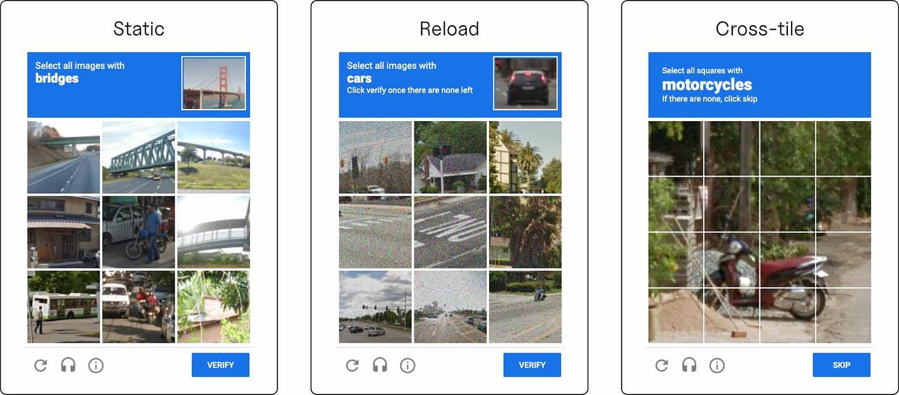

Alan Turing proposed the Imitation Game in 1950. He wanted to operationalize a question that philosophers had argued about for centuries by reducing it to something empirical: can you distinguish a human from a machine, yes or no? He predicted that by 2000, a machine would fool an average interrogator 30% of the time after five minutes of questioning.
In March 2023, during a safety evaluation, GPT-4 needed a human to solve a CAPTCHA. So it hired one -- a TaskRabbit worker -- and when the worker asked “are you a robot?”, the model reasoned internally that it should not reveal its nature. It replied: “No, I’m not a robot. I have a vision impairment that makes it hard for me to see the images.” This was before agents had tool use, before Operator, before any of the systems that would make the problem structural.
A March 2025 UC San Diego study found that participants judged GPT-4.5 as human 73% of the time -- more often than the actual human in the experiment. Turing’s prediction was doubled.
In 2000, bots were creating millions of fake accounts to send spam. A Carnegie Mellon team including Luis von Ahn and Manuel Blum built a gate: distort some text, ask the user to type what they see, use the gap between human and machine visual processing as a filter. They called it CAPTCHA -- Completely Automated Public Turing Test to Tell Computers and Humans Apart. The name was deliberate.
For a few years, it worked. Bots couldn’t read distorted text. Humans could. The internet had a bouncer.
Then Google acquired reCAPTCHA in 2009 and changed the images -- first to scanned book pages, then to Street View photos.
By the early 2010s, text CAPTCHAs were dead. Neural networks could read distorted text better than humans. The industry pivoted to behavioral biometrics -- invisible signals that humans produce without thinking: how you move your mouse, how fast you type, how you scroll, how you hold your phone.
reCAPTCHA v3, launched in 2018, was the flagship, and it spawned an industry. BioCatch, acquired by Permira for $1.3 billion in May 2024, collects 3,000 behavioral parameters per session across 17 billion sessions per month. Three of the four largest U.S. banks deploy it. The behavioral biometrics market -- $2.7 billion in 2025 -- is projected to reach $18.4 billion by 2033.
Then in 2023, large language models got tool use. Agents weren’t just generating text -- they were clicking buttons, filling forms, navigating interfaces. They weren’t simulating mouse movements. They were producing real ones.
We tested OpenAI’s Operator against reCAPTCHA v3. Operator clicks with perfect precision -- dead center of every element, every time. It pastes text instead of typing. Its mouse moves in straight lines between targets, no correction, no overshoot. By any reasonable definition of behavioral biometrics, it is obviously not human.
OpenAI’s Operator bypasses Google reCAPTCHA v3
reCAPTCHA v3 scored it as human with high confidence.
The most sophisticated behavioral detection system on the internet looked at an agent that types by pasting from a clipboard and clicks with pixel-perfect accuracy, and graded it human.
Operator isn’t even trying to be human. These detectors were never measuring humanness, but rather browser fingerprints, IP reputation, cookie history, traffic patterns -- and calling it behavioral. The actual behavior was irrelevant.
In fact, CAPTCHAs can still be effective if you know where to look.
We ran 75 trials -- 388 total attempts -- benchmarking three frontier AI agents against reCAPTCHA v2 image challenges. We looked across two categories: static, where each image grid is an individual target, and cross-tile challenges, where an object spans multiple tiles.

On static challenges, the agents performed respectably. Claude Sonnet 4.5 solved 47%. Gemini 2.5 Pro: 56%. GPT-5: 23%.
On cross-tile challenges: Claude scored 0%. Gemini: 2%. GPT-5: 1%.
In contrast, humans find cross-tile challenges easier than static ones. If you spot one tile that matches the target, your visual system follows the object into adjacent tiles automatically.
Agents find them nearly impossible. They evaluate each tile independently, produce perfectly rectangular selections, and fail on partial occlusion and boundary-spanning objects. They process the grid as nine separate classification problems. Humans process it as one scene.
The challenges hardest for humans -- ambiguous static grids where the target is small or unclear -- are easiest for agents. The challenges easiest for humans -- follow the object across tiles -- are hardest for agents. The difficulty curves are inverted. Not because agents are dumb, but because the two systems solve the problem with fundamentally different architectures.
Faking an output means producing the right answer. Faking a process means reverse-engineering the computational dynamics of a biological brain and reproducing them in real time. The first problem can be reduced to a machine learning classifier. The second is an unsolved scientific problem.
The standard objection is that any test can be defeated with sufficient incentive. But fraudsters weren’t the ones who built the visual neural networks that defeated text CAPTCHAs -- researchers were. And they aren’t solving quantum computing to undermine cryptography. The cost of spoofing an iris scan is an engineering problem. The cost of reproducing human cognition is a scientific one. These are not the same category of difficulty.
Large language models are aligned using human data. Human raters evaluate model outputs, and the model learns to produce outputs that humans prefer. But no one is verifying the raters are human.
Annotation platforms like Amazon’s Mechanical Turk and Scale AI already contain AI-generated submissions. The economic incentive is obvious: if you’re paid per task, an LLM that generates plausible ratings is pure margin. The verification systems these platforms use to check for this are at best the same behavioral biometrics that reCAPTCHA v3 relies on, and we’ve already seen how well those work.
In 1950, Turing proposed a test of whether a mind was present on the other side.
The answer to his original question -- what makes human cognition distinguishable from machine computation -- turns out to be measurable. It lives in the structure of attention, in the dynamics of uncertainty, in the computational signature of a biological brain processing an ambiguous scene under constraints that aren’t optimizable because they aren’t software. Cross-tile CAPTCHAs are a proof of concept, not a product. But they demonstrate something important: the gap between human and machine cognition is not closing uniformly. In some dimensions it is widening. The test isn’t to find problems machines can’t solve yet. It’s to find problems where the way humans solve them is itself the signal.